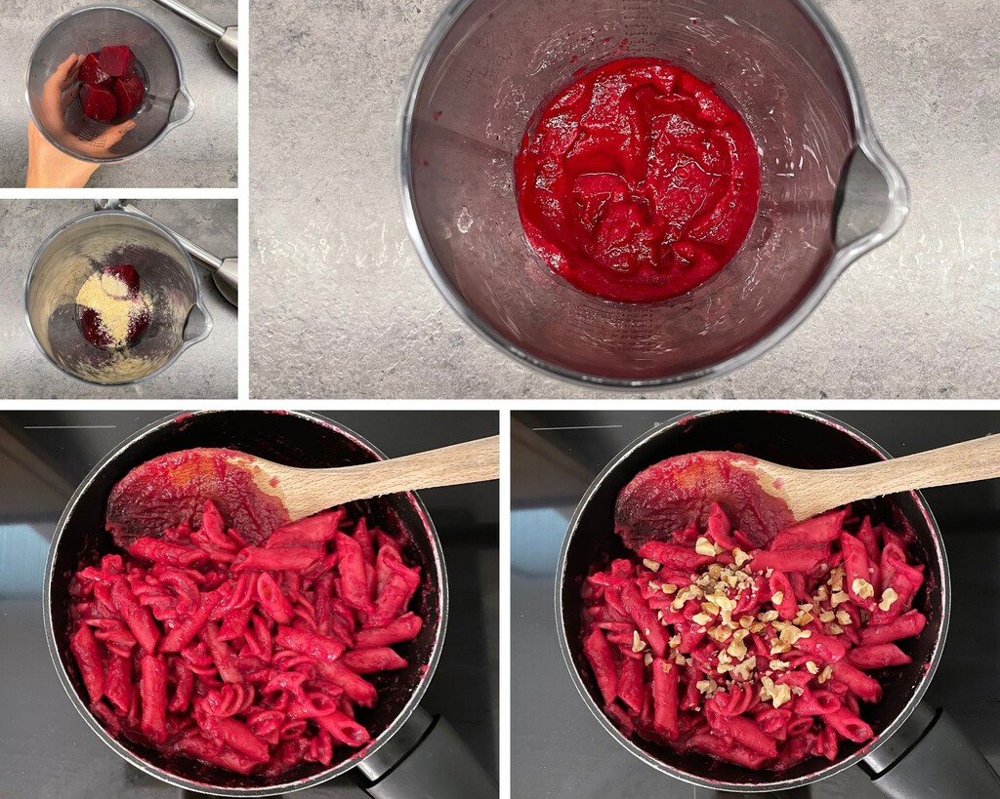

Cocer la pasta siguiendo las instrucciones del paquete. Colar el agua y reservar la pasta.
Mientras tanto, preparar la salsa. En un procesador de alimentos o licuadora, volcar todos los ingredientes: la remolacha ya cocida, el yogur natural, la levadura nutricional, la ralladura de limón, la nuez moscada, la sal y la pimienta. Procesar hasta lograr una consistencia untuosa de color rosa intenso.
En una sartén, verter la salsa y con ayuda de una cuchara revolver para que tome temperatura por unos minutos. Luego volcar la pasta cocida y los frutos secos picadas para integrar los sabores. De ser necesario, para una textura más ligera, agregar 1 a 2 cucharadas más de leche.
Servir en caliente y decorar con rawmesan, pimienta negra molida y unos hilos de oliva. O mismo con brotes germinados y queso parmesano recién rallado o en lacas.
Esta plato de pasta con salsa de remolacha como plato principal lo tiene todo: un sabor singular y un color espectacular. Solo nos queda disfrutarla con la mejor de las compañías posible junto a un buen vino y un helado de vainilla de postre.
Eso sí, son fundamentales, unas rodajas de pan de centeno, de multicereales o de trigo, para teñir de rosa el plato con la sala restante.